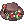
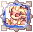
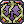
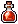
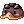

Aloesanddd
Used Skills
| Main Skills | Skill Rank | Use |
|---|---|---|
 Cart Cannon Cart Cannon
|
This will be your main Skill to kill every monsters.
This Damage Formula is:
In other words, this formula means that the higher your INT Stat, ATK and Cart Remodeling's Level, the more your Just a reminder, the Element of your The Different Property Cannon Balls are:
You can buy Cannon Balls from Mado Dealer in Prontera Town, | |
| Cart Boost | You must always have this Buff no matter what, it increases both your Movement Speed and the Damage of your Cart Cannon.
| |
| Loud Exclamation | Like, Cart Boost, you must always have this buff, it's basically a free +4 STR. | |
| Extra Skills | Skill Rank | Use |
| Call Homunculus | Always have your Homunculus assist you in battle.
Their Buffs are meant to be used by you to increase your efficiency in battle. | |
| Potion Pitcher Lv 4 | This allows you to Restore HP or SP to Yourself or Allies if you don't have a Healer in your Party or if you're Soloing/Farming. | |
 Crazy Weed Crazy Weed
|
These Skills can be an alternative to Cart Cannon when farming as it makes you not spend any Zeny to buy Ammunition, but to make this worth, you will need a  +7 Harvester Hat [1].
But in one hand, it's still better to sell the extra loots that you get from +7 Harvester Hat [1] as it's much more cost efficient to sell the loots and buy Ammunition for farming. In the other hand, if you think that you won't need any extra Zeny and you plan on staying on the Field/Dungeon to farm, then you would probably would use these Skills rather than buying Ammunition for Note that the Seeds weight is 0,1 and Cannon Balls is 1. | |
 Spore Explosion Spore Explosion
|
Click on [Expand] to reveal the Homunculus Skills and Consumables.
| Homunculus Skills | Homunculus | Use |
|---|---|---|
| Silent Breeze | This Skill can be used to restore your HP and also cure some Status Effects.
I find this particularly useful to remove the Status Effect Hallucination when you're farming in Gefenia for example. | |
| Pyroclastic | Use this Skill to boost your Damage.
| |
| Pain Killer |  Sera
|
I generally use this skill when farming as it allows me to receive very very little Damage.
This makes your farming experience much more comfortable and also allows you to not carry any extra Consumables which just add Weight. |
| Stein Wand | This Skill can be used to protect Yourself and your  Safety Wall. Safety Wall.
This can be used when you have gathered too much Monsters than you can handle much like  Thorn Wall's use. You can also combine both Skill to further improve your survivability. | |
| Consumables | Way to Obtain | Use |
 Fly Wing Fly Wing
|
 Tool Dealer
|
This item is a staple consumable when you're farming or just navigating.
It allows you to |
 White Potion White Potion
|
Always have this item in your Inventory to be able to use Potion Pitcher Lv 4. | |
 Shiny Marinade Beef Shiny Marinade Beef
|
Dropped by Payon Soldier in Sara's Memory Instance.
|
Always farm these Foods in Sara's Memory Instance, it's easy enough to complete and you can have these Foods that gives +6 Stats. |
| Anodyne |  Galapago Cap
Dropped by Monsters
|
This Item allows you to have the Endure effect which enables you to still walk while taking Damage as long as you the Buff is active.
This is useful when you're trying to gather monsters, it makes you not "Flinch" when taking damage, thus making the monster gathering smoother. |